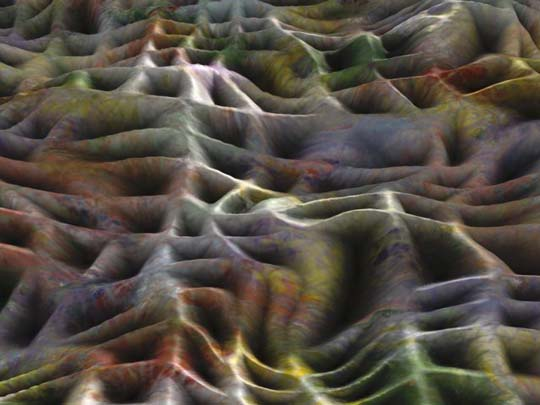

John Clive
digital abstractions
Grate e_scape
|
 |
This image included in JD Jarvis's MOCA tour
Click for tour
The Art Lover's Guide to Digital Art
Click for JD Jarvis's main essay
This concludes the John Clive exhibit.
John Clive's website
Gallery of John Clive's digital abstractions